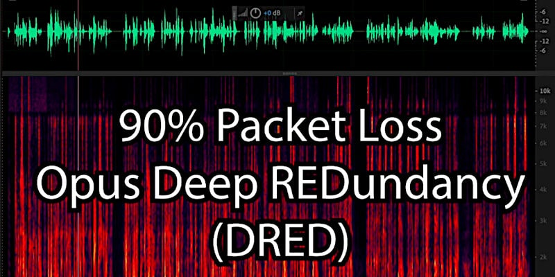

Deep Audio Redundancy (DRED)
Extension for the Opus Codec
Opus already includes a low-bitrate redundancy (LBRR) mechanism to transmit redundancy in-band to improve robustness to packet loss. LBRR is however limited to a single frame of redundancy, and typically uses about 2/3 of the bitrate of the "regular" Opus packet. The DRED extension allows up to one second or more redundancy to be included in each packet, using a bitrate about 1/50 of the regular Opus bitrate. Although the amount of redundancy that can be encoded in a packet is unbounded, there appears to be little use to including more than a few seconds.
AFAIK, for what I have saw/read, the MAIN aim of the Opus encoding is to provide a quality-granted glitch-free audio experience despite networking low-performances (or after a technological Armageddon,
 ). Which is very useful, in particular some real-world uses cases like RF radio broadcasting in real-time over-IP with one second (or few) of delay compared with the RF broadcast. Or for quality-granted glitch-free conversation in real-time (aka audio or audio in a video conference) with a reduced delay 1/10 or 1/30. Or for ham-radio p2p conversation (also crypted, military devices) or for audio broadcasting in EDGE/UMTS (2.5G-3G only) areas in which packets loss is a normal occurrence.
). Which is very useful, in particular some real-world uses cases like RF radio broadcasting in real-time over-IP with one second (or few) of delay compared with the RF broadcast. Or for quality-granted glitch-free conversation in real-time (aka audio or audio in a video conference) with a reduced delay 1/10 or 1/30. Or for ham-radio p2p conversation (also crypted, military devices) or for audio broadcasting in EDGE/UMTS (2.5G-3G only) areas in which packets loss is a normal occurrence.
BENEFITS VS DELAY, EXPLANATION AND USE-CASES In this conversation with Gemini after leveraging a comment exchange for explaining how this encoding impact two opposite scenarios (real-time and pre-recorded audio), I have added in the final part few real-world use-cases in which this encoding can brings values and two in which can be detrimental if improperly tuned. In fact, the delay can be more or less than one second, and the audio-recovery capability can be more resilient or less depending the value chosen. =-> Gemini chat: lnkd.in/eEF-rWf8 The chat has been update with the "minimum latency" as a reference concept for indicating a soft real-time specification in contrast with the hard real-time concept of having a top-limit about response time range. Moreover, the "minimum latency" concept helps us to understand the difference with "delay" as a fixed timing and "jitter" as concept for studying in a quantitative way the latencies propagation and their accumulations. =-> Gemini chat: lnkd.in/dJJmwmcJ Then, the chat is updated again about how providing a statistically granted hard real-time system starting from tuning a soft real-time system but fast-to-respond. Which is after all the ONLY way humans can achieve a real-world hard real-time system. Including a marketing strategy and a business model embedded into the development method of delivering the product from R&D to sales. Because a well-designed product sells by itself.
Share alike
© 2025, Roberto A. Foglietta <roberto.foglietta@gmail.com>, CC BY-NC-ND 4.0